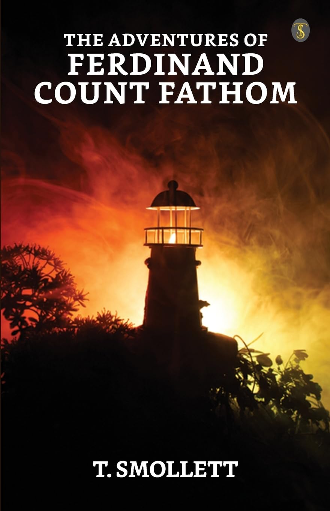

← Perpustakaan
Petualangan Ferdinand Count Fathom
T. Smollett
1753
Daftar Isi
- Tentang Apa Buku Ini?
- Perkenalan
- Petualangan Ferdinand Count Fathom - Kepada Dokter ———
- Bab Satu
- Beberapa Pengamatan Bijak Yang Secara Alami Memperkenalkan Sejarah Penting Kita.
- Bab Dua
- Sebuah Pandangan Dangkal Tentang Masa Kanak-Kanak Pahlawan Kita.
- Bab Tiga
- Ia Didistribusikan Dalam Kehidupan Militer, Dan Beruntung Mendapatkan Seorang Pelindung Yang Dermawan.
- Bab Empat
- Keahlian Dan Kematian Ibunya; Bersama Dengan Beberapa Contoh Kebijaksanaannya Sendiri.
- Bab Lima
- Rincian Singkat Tentang Pendidikannya.
- Bab Enam
- Dia Merenungkan Skema-Skema Penting.
- Bab Tujuh
- Bermitra Dengan Seorang Rekan Wanita, Untuk Mengaktifkan Bakatnya.
- Bab Delapan
- Upaya Pertama Mereka; Dengan Penyimpangan Yang Mungkin Dianggap Tidak Relevan Oleh Sebagian Pembaca.
- Bab Sembilan
- Pasukan Konfederasi Mengganti Baterai Mereka, Dan Mencapai Petualangan Yang Luar Biasa.
- Bab Sepuluh
- Mereka Melanjutkan Pengumpulan Sumber Daya Dengan Sukses Besar, Hingga Pahlawan Kita Berangkat Bersama Sang Bangsawan Muda Ke Wina, Di Mana Ia Bergabung Dengan Petualang Lainnya.
- Bab Sebelas
- Fathom Melakukan Berbagai Upaya Di Dunia Keberanian.
- Bab Dua Belas
- Dia Berhasil Mendapatkan Penginapan Di Rumah Seorang Pedagang Perhiasan Kaya.
- Bab Tiga Belas
- Dia Terpapar Pada Insiden Yang Sangat Berbahaya Selama Intrignya Dengan Putrinya.
- Bab Empat Belas
- Dia Terjebak Dalam Dilema Yang Mengerikan, Akibat Dari Perjanjian Dengan Istrinya.
- Bab Lima Belas
- Tetapi Pada Akhirnya Ia Berhasil Dalam Upayanya Terhadap Kedua Hal Tersebut.
- Bab Enam Belas
- Kesuksesannya Melahirkan Rasa Aman Yang Buta, Yang Membuatnya Sekali Lagi Hampir Terperangkap Di Apartemen Dulcinea Miliknya.
- Bab Tujuh Belas
- Kecurigaan Ibu Tiri Itu Muncul, Dan Dia Memasang Perangkap Untuk Petualang Kita, Yang Darinya Dia Diselamatkan Oleh Campur Tangan Kejeniusannya.
- Bab Delapan Belas
- Pahlawan Kita Berangkat Dari Wina, Dan Meninggalkan Wilayah Venus Menuju Medan Mars Yang Keras.
- Bab Sembilan Belas
- Dia Menempatkan Dirinya Di Bawah Bimbingan Rekannya, Dan Secara Tak Sengaja Sampai Ke Kamp Prancis, Tempat Dia Mengakhiri Karier Militernya.
- Bab Dua Puluh
- Dia Menyusun Strategi Tetapi Mendapati Dirinya Digagalkan—Melanjutkan Perjalanannya, Dan Diterjang Badai Dahsyat.
- Bab Dua Puluh Satu
- Dia Mendarat Di Atas Scylla, Berusaha Menghindari Charybdis.
- Bab Dua Puluh Dua
- Ia Tiba Di Paris, Dan Senang Dengan Sambutan Yang Diterima.
- Bab Dua Puluh Tiga
- Membuktikan Kesalahannya Dalam Kasus Kerusuhan Malam Hari.
- Bab Dua Puluh Empat
- Dia Mengabaikan Upaya Teman-Temannya, Dan Sangat Menyesal Atas Kelalaiannya.
- Bab Dua Puluh Lima
- Ia Menerima Takdirnya Seperti Seorang Filsuf; Dan Berkenalan Dengan Seorang Tokoh Yang Sangat Luar Biasa.
- Bab Dua Puluh Enam
- Sejarah Bangsa Kastilia Yang Mulia.
- Bab Dua Puluh Tujuh
- Sebuah Contoh Nyata Dari Kebajikan Fathom, Dalam Cara Kepulangannya Ke Inggris.
- Bab Dua Puluh Delapan
- Beberapa Keterangan Dari Rekan-Rekan Perjalanannya.
- Bab Dua Puluh Sembilan
- Sebuah Lagi Penyelamatan Dari Dampak Spekulasi Cerdik Penyelundup Itu.
- Bab Tiga Puluh
- Cara Istimewa Serangan Dan Kemenangan Fathom Atas Kebajikan Elenor Yang Cantik.
- Bab Tiga Puluh Satu
- Secara Tak Sengaja Ia Bertemu Dengan Teman Lamanya, Yang Dengannya Ia Mengadakan Konferensi, Dan Memperbarui Perjanjian.
- Bab Tiga Puluh Dua
- Ia Muncul Di Dunia Yang Luas Dengan Tepuk Tangan Dan Kekaguman Universal.
- Bab Tiga Puluh Tiga
- Dia Membangkitkan Rasa Iri Dan Niat Jahat Dari Para Ksatria Rendahan Dari Ordonya Sendiri, Yang Atas Mereka Dia Meraih Kemenangan Mutlak.
- Bab Tiga Puluh Empat
- Dia Melakukan Aksi Lain Yang Menyampaikan Gambaran Sejati Tentang Rasa Syukur Dan Kehormatannya.
- Bab Tiga Puluh Lima
- Dia Kembali Ke Bristol Spring, Di Mana Dia Berkuasa Sebagai Yang Terbaik Selama Seluruh Musim.
- Bab Tiga Puluh Enam
- Dia Terpikat Oleh Pesona Seorang Petualang Wanita, Yang Daya Pikatnya Membuatnya Mengalami Perubahan Nasib Yang Baru.
- Bab Tiga Puluh Tujuh
- Alasan Baru Untuk Menunjukkan Ketenangan Dan Ketabihan Hatinya.
- Bab Tiga Puluh Delapan
- Si Penggigit Digigit.
- Bab Tiga Puluh Sembilan
- Petualang Kita Diperkenalkan Dengan Kehidupan Baru.
- Bab Empat Puluh
- Ia Merenungkan Keagungan Dan Satelit-Satelitnya Dalam Gerhana.
- Bab Empat Puluh Satu
- Satu Pertengkaran Berakhir, Dan Yang Lainnya Diputuskan Dengan Senjata Yang Tidak Biasa.
- Bab Empat Puluh Dua
- Pertemuan Tak Terduga, Dan Revolusi Bahagia Dalam Urusan Petualang Kita.
- Bab Empat Puluh Tiga
- Fathom Membenarkan Pepatah, “Apa Yang Tertanam Di Dalam Tulang Tidak Akan Pernah Keluar Dari Daging.”
- Bab Empat Puluh Empat
- Anecdotes Tentang Kemiskinan, Dan Eksperimen Untuk Keuntungan Mereka Yang Mungkin Terkena.
- Bab Empat Puluh Lima
- Kesulitan Renaldo Semakin Dalam, Dan Rencana Fathom Semakin Rumit.
- Bab Empat Puluh Enam
- Petualang Kita Menjadi Mutlak Dalam Kekuasaannya Atas Nafsu Sahabatnya, Dan Mencapai Setengah Dari Tujuannya.
- Bab Empat Puluh Tujuh
- Seni Meminjam Dijelaskan Lebih Lanjut, Dan Sebuah Kisah Tentang Fenomena Aneh.
- Bab Empat Puluh Delapan
- Count Fathom Membongkar Senjatanya; Namun Ditolak; Dan Mengubah-Ubah Operasinya Tanpa Hasil.
- Bab Empat Puluh Sembilan
- Kehormatan Monimia Dilindungi Oleh Campur Tangan Surga.
- Bab Lima Puluh
- Fathom Mengubah Suasana, Dan Muncul Sebagai Karakter Baru.
- Bab Lima Puluh Satu
- Mengalahkan Saingan Medis.
- Bab Lima Puluh Dua
- Ia Memperbaiki Kota Metropolitan, Dan Mendaftarkan Dirinya Di Antara Putra-Putra Paean.
- Bab Lima Puluh Tiga
- Memperoleh Pekerjaan Sebagai Akibat Dari Keguguran Yang Beruntung.
- Bab Lima Puluh Empat
- Gerhananya, Dan Penurunan Bertahapnya.
- Bab Lima Puluh Lima
- Setelah Berbagai Upaya Yang Gagal, Dia Terpaksa Menggunakan Jebakan Pernikahan.
- Bab Lima Puluh Enam
- Di Mana Keberuntungannya Secara Efektif Tercekik.
- Bab Lima Puluh Tujuh
- Setelah Fathom Ditempatkan Dengan Aman, Pembaca Dihibur Dengan Kilas Balik.
- Bab Lima Puluh Delapan
- Renaldo Meringkas Proses Hukum, Dan Menyatakan Dirinya Sebagai Putra Ayahnya.
- Bab Lima Puluh Sembilan
- Dia Adalah Pembawa Kebahagiaan Bagi Saudarinya, Yang Menghilangkan Lapisan Selaput Yang Telah Lama Menghalangi Penetrasinya, Terkait Dengan Count Fathom.
- Bab Enam Puluh
- Dia Membalas Keterikatan Sahabatnya; Dan Menerima Sebuah Surat Yang Membuatnya Hampir Mati Dan Gila.
- Bab Enam Puluh Satu
- Renaldo Bertemu Dengan Monumen Keadilan Yang Hidup, Dan Bertemu Dengan Tokoh Penting Dalam Memoar Ini.
- Bab Enam Puluh Dua
- Kepulangannya Ke Inggris, Dan Ziarah Tengah Malam Ke Makam Monimia.
- Bab Enam Puluh Tiga
- Ia Memperbarui Ritus Kesedihan, Dan Terpesona.
- Bab Enam Puluh Empat
- Misteri Terungkap—Sebuah Pengakuan Lain, Yang, Semoga, Pembaca Tidak Dapat Memprediksinya.
- Bab Enam Puluh Lima
- Tautan Retrospektif, Diperlukan Untuk Penggabungan Memoar-Memoar Ini.
- Bab Enam Puluh Enam
- Sejarah Mendekati Suatu Periode.
- Bab Enam Puluh Tujuh
- Yang Terpanjang Dan Yang Terakhir.